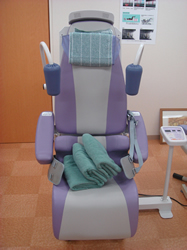
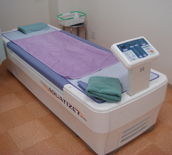

クリニック紹介
阿部整形外科は、地域に根ざした整形外科クリニックとして、外傷治療から慢性疾患、
リハビリテーションまで幅広く対応しています。
常勤の理学療法士による運動療法、ウォーターベッドなどの物理療法機器を備え、
患者様の症状に合わせた総合的な治療を行っています。
レントゲン室

牽引機

ウォーターベッド

阿部整形外科は、地域に根ざした整形外科クリニックとして、外傷治療から慢性疾患、
リハビリテーションまで幅広く対応しています。
常勤の理学療法士による運動療法、ウォーターベッドなどの物理療法機器を備え、
患者様の症状に合わせた総合的な治療を行っています。

